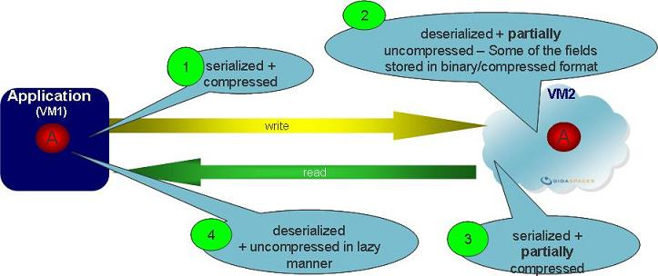

By default, when using the GigaSpaces Java API, Space object fields are stored in the Space as is. No data compaction or compression is done while the object is transported across the network, or when stored within the Space.
With the compact serialization pattern, you can reduce the footprint of the data object in the Space memory when it is stored in the data grid, which allows storing more Space objects per memory unit. This pattern works very well when the Space object includes a large number of numerical values, because these objects are stored as a more optimal data type.
The compact serialization pattern enables complete control over the format of the data object while transported over the network and when stored within the Space. This technique:
Compresses the object payload data when transported over the network and when stored in memory.
Avoids the need for de-serialization when a Space object is written to the Space from a remote client (for non-primitive fields such as user-defined classes or collection fields).
Avoids the need for de-serialization when data is replicated to the backup Space.
Avoids the need for serialization when reading an object back from the Space to the client process (on the Space side).
The Compressed storage type
The Binary storage type
C++ and .Net API data objects may undergo some compaction when sent across the network.
With the compact serialization pattern, the following happens to the data object:
Before writing the object, all non-indexed fields (payload data) are serialized (packed) into one byte array field using the GigaSpaces serialization API.
All indexed fields are serialized/de-serialized as usual (the writeExternal, readExternal implementation is available to write and read these fields into the stream).
After reading the object from the Space, the byte array data is de-serialized (unpacked).

When an object is written to the Space:
The non-indexed fields are compacted and serialized into the same field (as a byte array).
All the indexed fields plus the byte array are serialized as usual via the writeExternal call.
The object arrives de-serialized in the Space, indexed fields stored as usual, and the byte array field is stored as is.
When an object is read from the Space:
The read template undergoes the same actions as when writing an object to the Space
The matching object is serialized and sent to the client.
When the matching object arrives at the client side is it de-serialized, and the byte array data is de-serialized and expanded (in a lazy manner).
Using the compact serialization pattern can drastically reduce the object footprint when it is stored in the Space. While more of the Space object fields are serialized using the GigaSpaces Serialization API, the memory footprint overhead is smaller compared to the default serialization mode.
The compact serialization pattern involves creating the following methods:
pack method - Packs the object data into a single field, and serializes the non-indexed fields into the byte array.
unpack method - Unpacks the object data into a single field, and deserializes the non-indexed fields from the byte array.
writeExternal method - Serializes the object data., the index fields and the byte array. Required for the Externalizable interface.
readExternal method - Deserializes the object data, the indexed fields, and the byte array. Required for the Externalizable interface.
checkNulls method - Handles null data for the indexed and byte array fields.
getnulls method - Handles null data for non-indexed fields.
The BinaryOutputStream contains various methods to serialize all of the Java primitive types, along with their object wrappers and arrays forms in compacted mode. BinaryInputStream is its counterpart for deserialization. Your pack and unpack methods will use an instance of those classes.
The provided code example includes a Space class with 37 fields:
One Integer data type field (indexed for queries).
12 String fields
12 Long fields
12 Integer fields
In this example, the footprint overhead of the default serialization is 250% larger than the footprint of the compact format. To run the example, copy the zip file to \GigaSpaces Root\examples\, extract the contents, and follow the instructions in the readme file.
Our example involves a Space class that is modified to follow the compact serialization pattern.
The original class includes:
One Integer indexed field.
12 String type non-indexed fields declared as Space class fields.
12 Long type non-indexed fields declared as Space class fields.
12 Integer type non-indexed fields declared as Space class fields.
Getter and Setter methods for the above fields.
The original class looks like this:
@SpaceClass
public class SimpleEntry {
public SimpleEntry() {
}
private Integer queryField;
private Long _longFieldA1;
....
@SpaceRouting
@SpaceIndex(type=SpaceIndexType.BASIC)
public Integer getQueryField() {
return queryField;
}
// getter and setter methods
public void setQueryField(Integer field) {
queryField = field;
}
public Long get_longFieldA1() {
return _longFieldA1;
}
public void set_longFieldA1(Long fieldA1) {
_longFieldA1 = fieldA1;
}
The modified class that implements the compact serialization pattern uses the @SpaceClass(includeProperties=IncludeProperties.EXPLICIT) decoration, which allows you to control which fields will be Space class fields explicitly. This class also includes:
One Integer indexed field.
One byte array field declared as a Space class field.
12 String type non-indexed fields that are not Space class fields.
12 Long type non-indexed fields that are not Space class fields.
12 Integer type non-indexed fields that are not Space class fields.
Getter and setter methods for the above fields.
pack and unpack methods, and several helper methods.
Externalizable implementation with writeExternal and readExternal methods
The modified class looks like this:
@SpaceClass(includeProperties=IncludeProperties.EXPLICIT)
public class BinaryFormatEntry implements Externalizable {
public BinaryFormatEntry(){}
private Integer queryField;
private byte[] _binary;
private Long _longFieldA1;
....
@SpaceRouting
@SpaceIndex(type=SpaceIndexType.BASIC)
public Long getQueryField()
{
return queryField;
}
public void setQueryField(Long _queryField)
{
queryField = _queryField;
}
@SpaceProperty
public byte[] getBinary() {
return _binary;
}
public void setBinary(byte[] _binary) {
this._binary = _binary;
}
public Long get_longFieldA1() {
return _longFieldA1;
}
public void set_longFieldA1(Long fieldA1) {
_longFieldA1 = fieldA1;
}
...
public void pack(){...}
public void unpack(){...}
public void writeExternal(ObjectOutput out){...}
public void readExternal(ObjectInput in) {...}
private long getnulls(){...}
private short checkNulls() {...}
}
The pack method serializes the object's non-indexed data. It is called explicitly before calling the Space write operation. The pack method serialize the object data by placing the data into the byte array field. Null value field indications are stored within a single field. The BinaryOutputStream utility class is used to write the compacted data to the byte array.
public void pack() throws Exception
{
BinaryOutputStream output = new BinaryOutputStream();
long nulls = getNulls();
output.writeLong(nulls);
if (_longFieldA1 != null)
output.writeLong(_longFieldA1);
// ... etc. for all other compactable fields.
_binary = output.toByteArray();
output.close();
}
The unpack method deserializes the object data by extracting the data from the byte array field and populating the fields with their corresponding values. null value fields are non-populated. This method is called after calling the Space read operation. The BinaryOutputStream utility class is used to read the compacted data and place it in the relevant field.
public void unpack() throws Exception
{
BinaryInputStream input = new BinaryInputStream(_binary);
long nulls = input.readLong();
int i = 0;
if ((nulls & 1L << i) == 0)
_longFieldA1 = input.readLong();
i++;
// ... etc. for all other compactable fields.
input.close();
_binary = null;
}
The writeExternal method serializes the object data into the output stream. The object data includes a field that indicates which fields have null values, the indexed fields, and a byte array field that includes all non-indexed field data (created by the pack method). The writeExternal method assumes that the pack method has been called explicitly prior to the Space write method call that initiated the writeExternal call.
public void writeExternal(ObjectOutput out) throws IOException {
short nulls = 0;
int i=0;
nulls = checkNulls();
out.writeShort(nulls);
if (queryField != null) {
out.writeLong(queryField);
}
if (_binary != null) {
out.write(_binary);
}
}
The readExternal method performs the opposite action to the writeExternal method, populating the indexed field data and the byte array field data. Later, the remaining fields are populated when the unpack method is called.
public void readExternal(ObjectInput in) throws IOException, ClassNotFoundException {
short nulls;
int i=0;
nulls = in.readShort();
if( (nulls & 1L << i) == 0 )
queryField = in.readLong();
i++;
if( (nulls & 1L << i) == 0 )
{
byte[] data = new byte[500];
int len = in.read(data);
_binary = new byte[len];
System.arraycopy(data, 0, _binary, 0, len);
}
}
The checkNulls method reads the indexed fields and the byte array field, and places an indication for the ones with null values in a short data type field, using a bitmap.
private short checkNulls() {
short nulls = 0;
int i = 0;
nulls = (short) ((queryField == null) ? nulls | 1 << i : nulls);
i++;
nulls = (short) ((_binary == null) ? nulls | 1 << i : nulls);
i++;
return nulls;
}
The getNulls method reads all class non-indexed fields (those whose data is stored within the byte array) and place an indication for the ones with null valued in a long data type field, using a bitmap.
private long getnulls()
{
long nulls = 0;
int i=0;
nulls = ((_longFieldA1 == null) ? nulls | 1L << i : nulls ) ;
i++;
nulls = ((_longFieldB1 == null) ? nulls | 1L << i : nulls ) ;
i++;
...
return nulls;
}
The example uses a factory method called generateBinaryFormatEntry to create the Space object. After the Space has been populated, the pack method is called.
private BinaryFormatEntry generateBinaryFormatEntry(int id){
BinaryFormatEntry bfe = new BinaryFormatEntry(id, value1 , value2 ?)
bfe.pack(); // the pack method is called implicitly as part of the factory method
return bfe;
}
The following code snippet shows how the compact serialized object is written to the Space, and read from the Space:
GigaSpace _gigaspace;
BinaryFormatEntry testBFE = generateBinaryFormatEntry(500);
_gigaspace.write(testBFE, Lease.FOREVER);
BinaryFormatEntry templateBFE = new BinaryFormatEntry();
templateBFE.setQueryField (new Long(500));
BinaryFormatEntry resBFE = (BinaryFormatEntry)_gigaspace.read(templateBFE, 0);
resBFE.unpack(); // this deserialize the binary data into the object fields
The PackRat project allows you to use the compact serialization pattern via simple annotations.